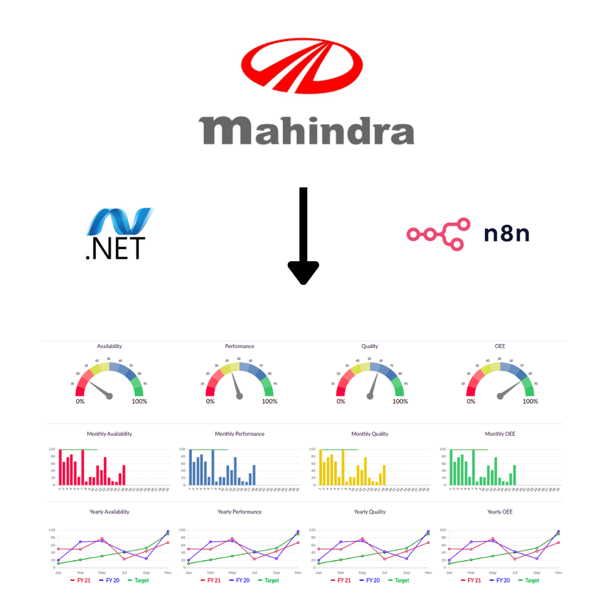

Tech Stack: Docker- Containerization, Aws EC2 , n8n , Python
Developed an Employee Management System for Mahindra where employee attendance and activity data was captured directly from biometric machines.
This data was stored in a centralized database and automatically sent to the Admin for reporting and monitoring. Salary deductions for late arrivals or absences were calculated based on attendance logs.
Integrated n8nto automate workflows including daily reports and Slack notifications to HR, ensuring seamless communication and time-saving operations.
